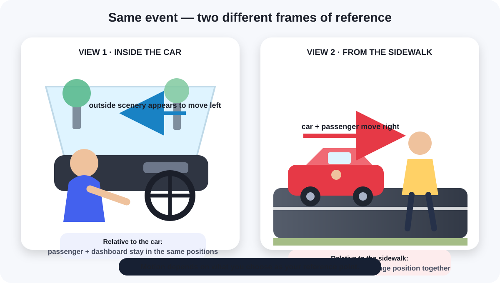
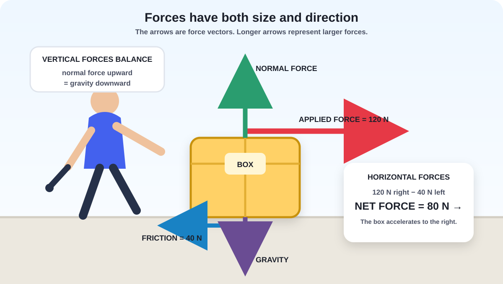

These are standalone chapter images, not the generic homepage graphic. This page is only for reviewing the visual direction before the rest of the illustrations are finalized.

Frames of Reference: Inside the moving car, the passenger and dashboard stay in the same positions relative to one another. From the sidewalk, the car and passenger move together past the observer. The description of motion changes because the reference point changes.

Inertia and Net Forces: The applied force is larger than friction, so the horizontal forces are unbalanced and the box accelerates to the right. The upward normal force and downward gravity balance vertically.